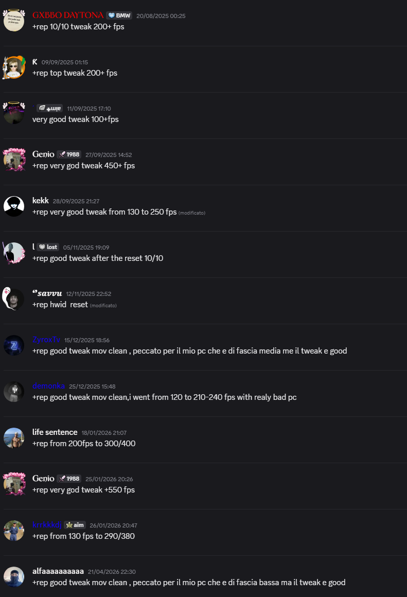

Recensioni e prove reali
Una selezione piu pulita delle prove sociali di SapoTweak: screenshot, feedback della community e risultati raccontati in modo piu professionale.
Visual proof
Screen reali, non mockup casuali
La galleria resta scura, pulita e leggibile: screenshot interni, risultati di test e materiale condiviso dalla community raccolti in una sezione piu premium.

Panoramica di feedback e prove raccolte dalla community SapoTweak.

Esempio di risultato condiviso dagli utenti dopo l'uso del tweak.

Ulteriore prova visuale del clima e del tono dei feedback raccolti.
Selected feedback
Recensioni riscritte in modo piu chiaro e professionale
Abbiamo trasformato il wall di messaggi in card piu leggibili, senza perdere il tono reale della community.
"Preset e pulizia di sistema hanno reso il gioco piu fluido e consistente. Il feedback principale non e solo sugli FPS massimi, ma sulla sensazione generale di reattivita."
"Diversi utenti riportano incrementi percepiti nella stabilita e una migliore tenuta in sessione, soprattutto su PC piu sporchi o pieni di processi in background."
"I commenti migliori parlano di input piu pulito, meno delay percepito su Windows e comportamento piu consistente dopo l'applicazione del preset."
"Molti screenshot storici della community citano guadagni notevoli sugli FPS. Il dato cambia da PC a PC, ma il pattern piu ricorrente resta la maggiore leggerezza del sistema."
"Un altro tema ricorrente e la rapidita del supporto: attivazione, spiegazioni e assistenza vengono percepite come parte concreta del prodotto."
"Le recensioni piu forti combinano tre elementi: tweak legittimo, risultati subito percepibili e processo di acquisto / download chiaro."
Community stream
Altri feedback rapidi
Una fascia dinamica che tiene il tono community ma con una presentazione molto piu ordinata.
"+rep 10/10 tweak"
"smooth game legit"
"system feels cleaner"
"good support and quick answers"
"more consistent FPS"
"less delay in Windows"
"+rep competitive feel"
"great for FiveM sessions"
"+rep 10/10 tweak"
"smooth game legit"
"system feels cleaner"
"good support and quick answers"
"more consistent FPS"
"less delay in Windows"
"+rep competitive feel"
"great for FiveM sessions"
Vuoi passare al checkout ufficiale?
Se il tono della pagina ti convince, puoi andare direttamente ai piani ufficiali o tornare alla home per vedere hero, feature e supporto nello stesso stile premium.